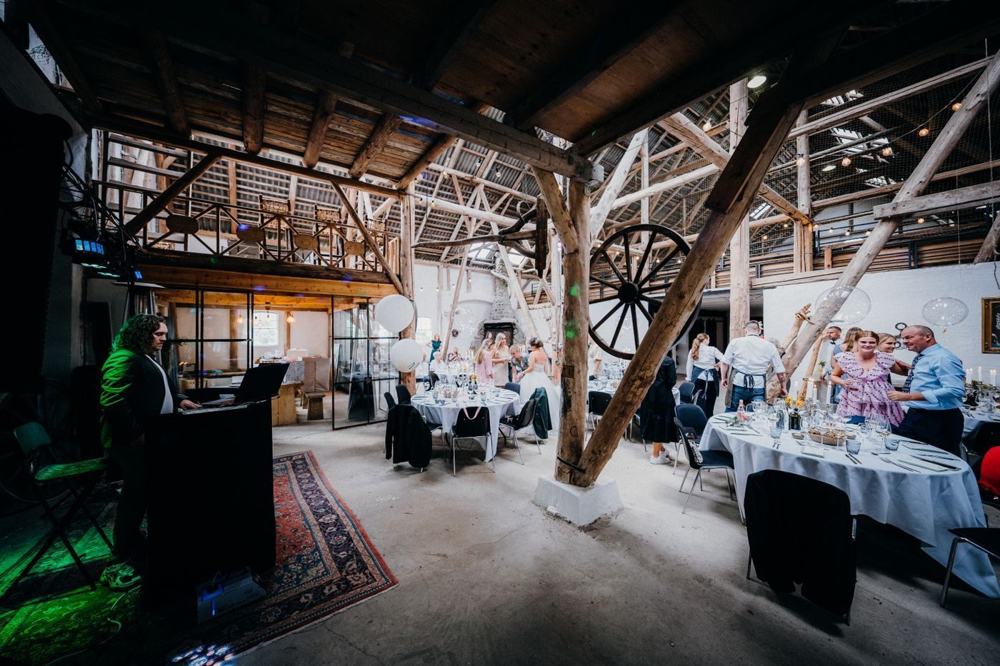

Visit Shreveport Scottish Rite Cathedral
A historic 1917 Beaux Arts venue in Shreveport for weddings and events.
Address: 725 Cotton St, Shreveport, LA 71101
Hours: Wednesday and Thursday 11:00 AM to 3:00 PM.
Phone: (318) 221-9713
Gallery


All gallery photos are stock photos, labeled as such. They show the kind of work and setting described on this page, not this business.
Contact
Shreveport Scottish Rite Cathedral serves Shreveport, LA. Questions? Call (318) 221-9713.